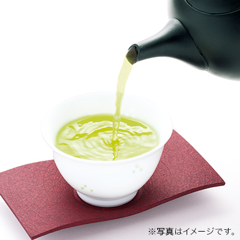
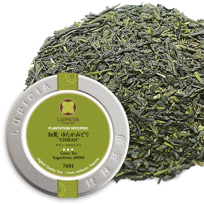

LUPICIA 7401 · g13107401
치란 유타카미도리
知覧 ゆたかみどり
チラン ユタカミドリ


ルピシアの日本茶の中でも特に人気のある深蒸し煎茶です。
サツマイモのようなほっこりとした甘い香りと、コクがありながらも渋みが少なく甘みのある、まろやかな味わいです。
鹿児島県で多く栽培されている品種「ゆたかみどり」を使用しています。
ゆたかみどりは、濃厚で豊かな旨みと、緑の色合いが美しく、まろやかな甘みを持った品種です。
鹿児島では、収穫前に一定期間日光を遮るために覆いを被せて栽培するのが一般的です。
そうすることで渋みのもとであるタンニンの生成を抑えることができ、渋みの少ない味わいになります。
さらに、深蒸しすることでまろやかになり、その甘みが一層引き出されます。
【品種：ゆたかみどり】
やぶきたに次いで日本で2番目に栽培面積が大きく、やぶきたよりも収穫が早い早生（わせ）品種です。
耐寒性が弱いので、温暖な地域で栽培されており、主に鹿児島県、宮崎県で多く栽培されています。
収穫前に一定期間日光を遮るために覆いを被せて栽培するのが一般的で、深蒸しで製造されることが多い品種です。
【産地情報】
知覧町（ちらんちょう）は、鹿児島県薩摩半島の南部中央に位置しており、2007年12月に川辺町、頴娃町と合併し、現在は南九州市となりました。
温暖な気候と平坦な地形で、薩摩富士とも呼ばれる美しい開聞岳（かいもんだけ）を望む、見渡す限りの大茶園が広がる広大な産地です。
知覧は鹿児島県の中でも古くからお茶生産に取り組み、全国茶品評会でも産地賞を受賞するなど、全国的にも優れた茶産地として有名です。
武家屋敷や知覧特攻平和会館などがあり、観光客が年間約100万人訪れる観光の町でもあります。
【仕上げ】 深蒸し
- 상품번호
- 7401
- 상품 형태
- 50g 캔입
- 가격
- 1,130円
- 원재료
- 緑茶（日本）※商品の改定などにより、商品パッケージの記載内容が上記内容と一部異なる場合がございます。
- 원산지
- 日本※商品の改定などにより、商品パッケージの記載内容が上記内容と一部異なる場合がございます。
- 찻잎
- 4-5g
- 물
- 75-80℃
- 우림 시간
- 45秒-1分
- 우림 횟수
- 1-2回
다른 포장
- 50g 봉입 800円 【일시품절】 · 품절
- 50g 캔입 1,130円
- 50g 일러스트入라벨 캔입 1,130円
- 티백 10개팩입 950円
- 티백 5개BOX입 730円
- 티백10개 일러스트입라벨캔 1,280円
보관된 상품 정보 갱신일: 2026-06-07